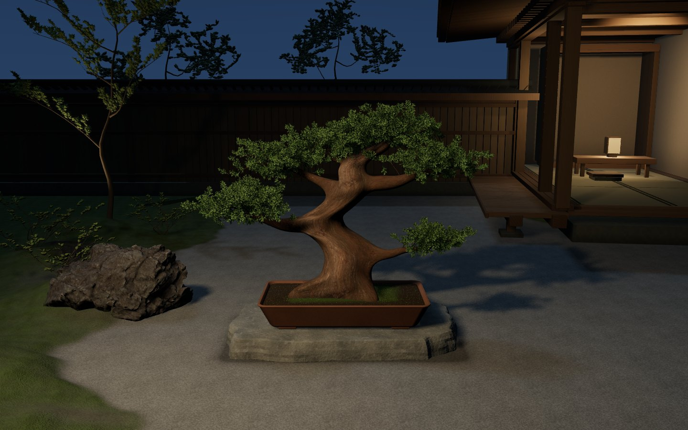
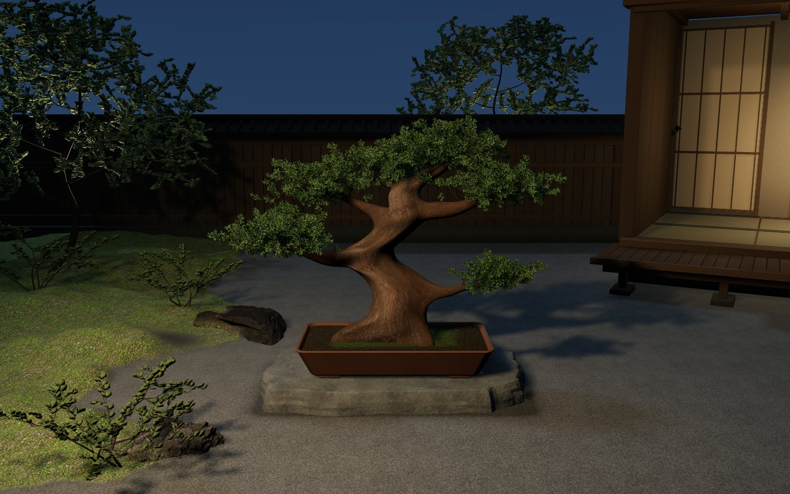
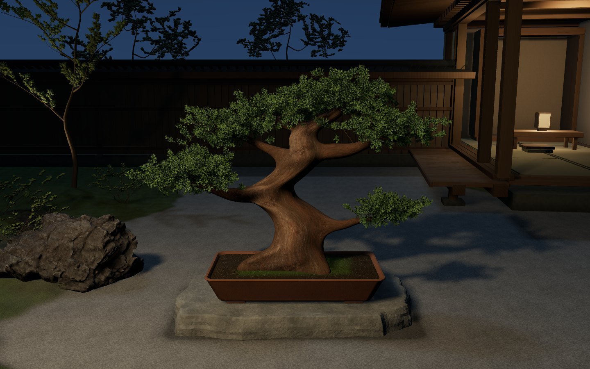
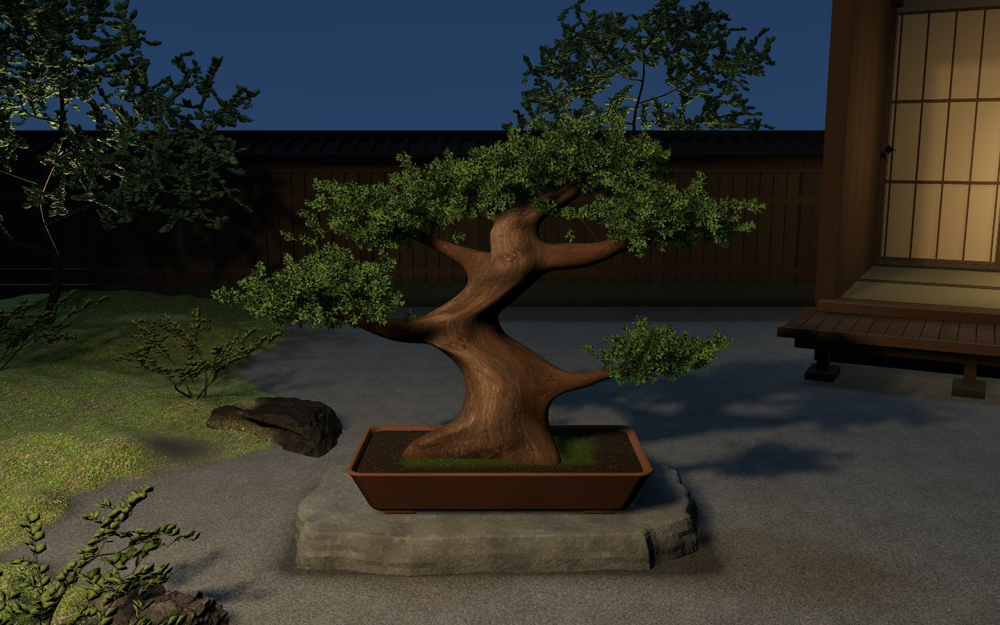
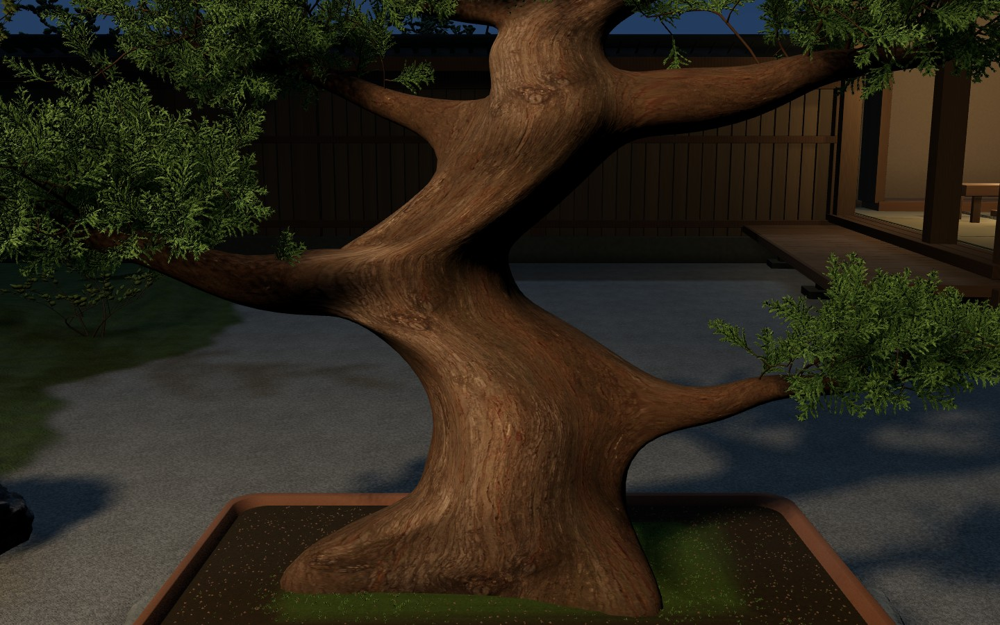
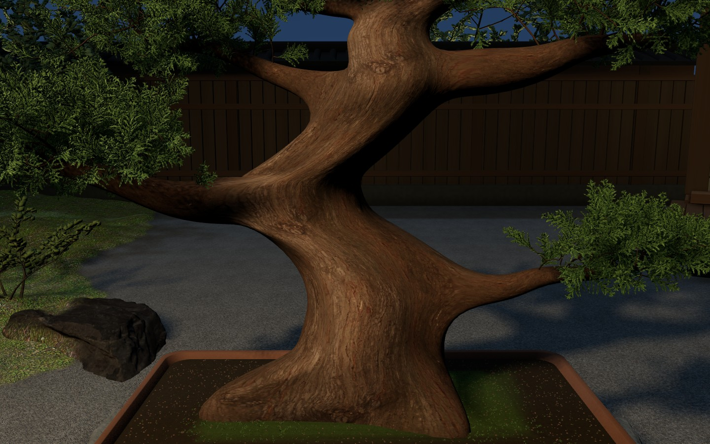
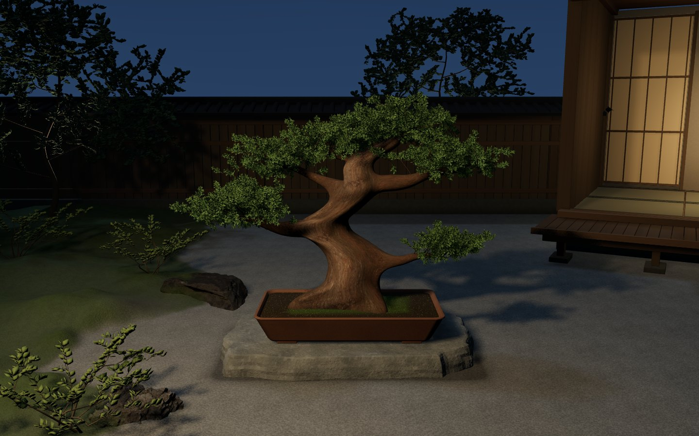
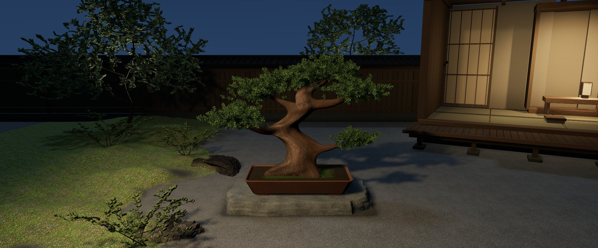
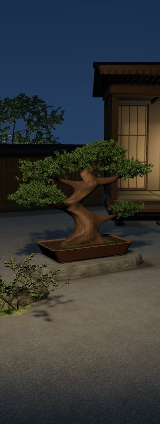
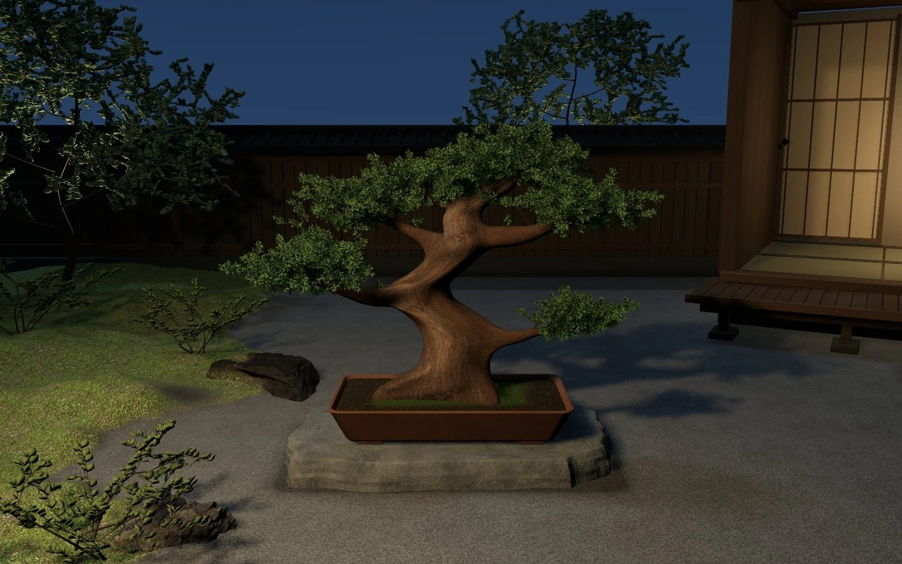

最終通常構図


この確認記録には文字があります。実サイトは文字なし。主役の幹とshaderは固定、背景geometry/material/有限庭灯と室内光位置は変更。wood寄りだけforced-highの詳細葉を両側に合わせた診断画像です。Mac Chrome154実WebGLの画面で、生成目標画像による背景の置換はありません。
遠景の裸軸/枝先葉束、古木の滑らかなS量塊、スマホの縦余白、通常幅の建築奥、GPU負荷/cold17.70秒は未達。結果 / 検証と実測 / 独立レビュー









